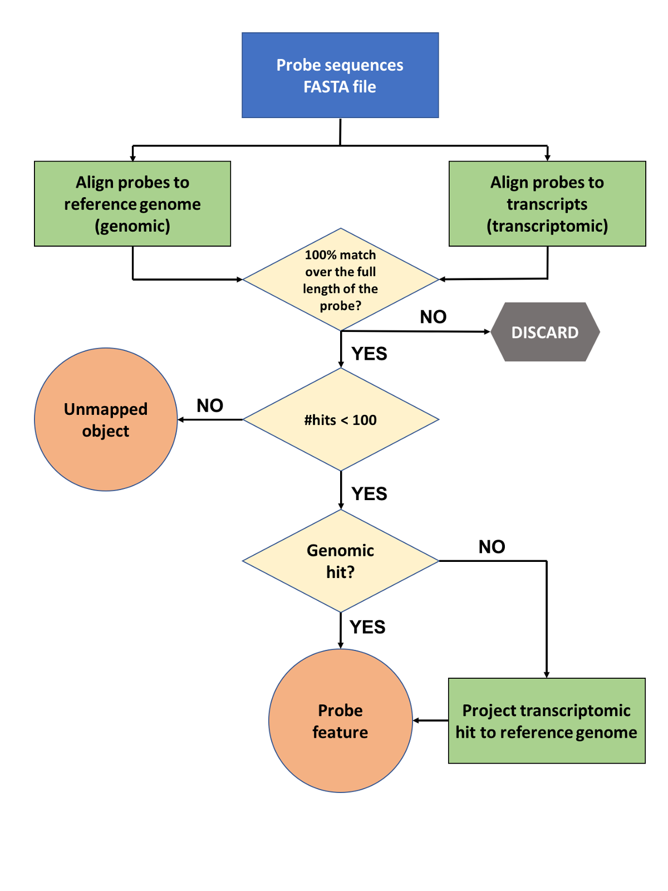
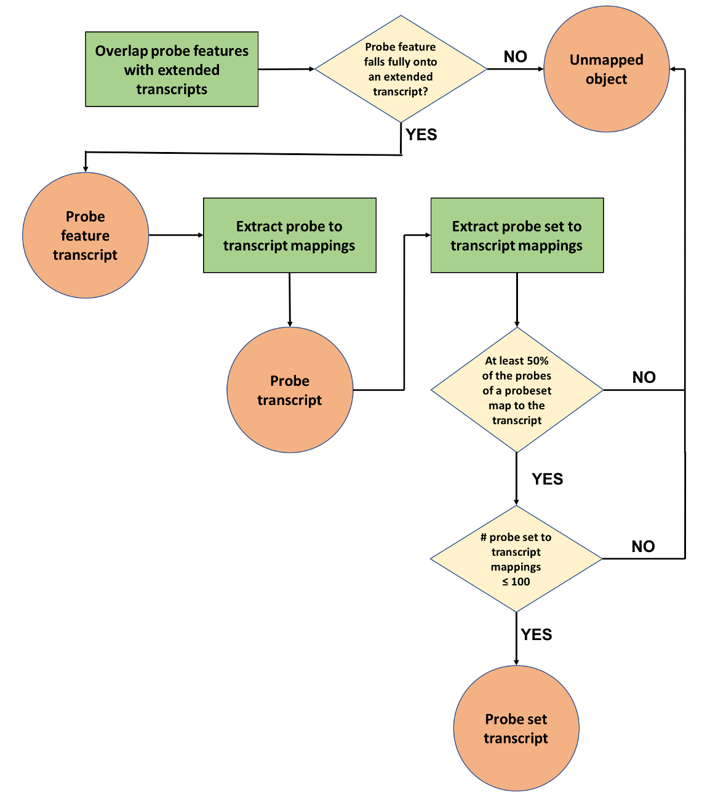

Our microarray probe mapping pipeline is in maintenance mode. We plan to progressively retire species with low usage statistics. The data will remain available in the Ensembl archive sites.
If you find this annotation useful to your research, please let us know about your use case by emailing helpdesk@ensembl.org.
Expression microarrays are used to measure the expression levels of large numbers of genes simultaneously. Ensembl annotates expression microarrays on the reference genome and transcripts sequences for those arrays whose manufacturers disclose the probe sequences in a public archive. Our annotation pipeline comprises of two phases that are summarised in Figure 1 and 2 respectively, along with the intermediate results produced.
In expression arrays a probe (or oligoprobe) is a short DNA sequence targeting a short region of a transcript. They are used to detect the presence of nucleotide sequences through hybridisation to single-stranded nucleic acid due to complementarity between the probe and the target. Typically, probes are 25 bp to 60 bp long. In Affymetrix arrays, probes are grouped into probesets which are designed to target the same transcript with multiple measurements.
Each probe sequence is aligned to both the reference genome and transcript sequences, with the latter comparison allowing us to capture probes that span introns and would be otherwise missed by the genomic alignment step. Alignment is performed using Exonerate (Slater et al., 2005) and the resulting hits are filtered to keep only those that constitute a perfect match across the whole probe sequence, while the rest are being discarded. Probes that align to 100 or more loci are considered promiscuous and are stored in our regulation databases as unmapped objects. For those transcriptomic hits that fulfill the above criteria we perform an extra step where the the transcriptomic hit coordinates are converted (‘projected’) to the equivalent genomic coordinates. Finally, both genomic and the projected transcriptomic hits are stored in our databases as probe features using the extended cigar format.
|  |
| Figure 1: Probe mapping pipeline first phase - from probe sequences to genomic alignments (probe features) |
The goal of this phase is to map microarray probes and probesets (when appropriate) to Ensembl transcripts (Figure 2). Initially, the genomic coordinates of the probe features generated in phase one are compared to the genomic coordinates of the full set of transcripts, including their UTRs (“extended transcripts”). In cases where annotated UTRs are absent a default UTR length is used. This is calculated for both 5’ and 3’ UTRs as the highest of either the mean or the median of all annotated UTRs for a given species.
A probe feature is linked to a transcript if it almost completely overlaps (allowing for only 1 bp of non overlap) with an exon or UTR region. Probe features that fail to fulfill this criterion are stored as unmapped objects. Successful probe feature to transcript mappings are then used to draw the connections between probes and transcripts and stored as probe transcript mappings.
Finally, for arrays that contain probesets, we consider all transcripts to which the probes of a probeset have been mapped to (see previous step). If less than half of its probes have been assigned to a transcript, the mapping is considered insufficient and stored as an unmapped object. If, based on this criterion, the overall number of transcripts to which the probeset would be mapped exceeds 100, then the probeset is considered promiscuous and all mappings that were considered are stored as unmapped objects. Otherwise, the successful probeset to transcript mappings are stored in the database.
|  |
| Figure 2: Probe mapping pipeline second phase - mapping probe features, probes and probesets to transcripts |
Probe features can be displayed in the 'Region in detail' view in the Ensembl browser, while probe to transcript mappings can be seen in the 'Oligo probes' view, accessible via the transcript page.